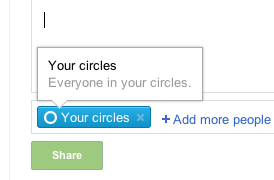
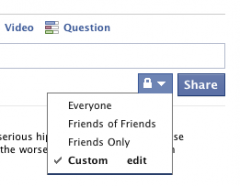
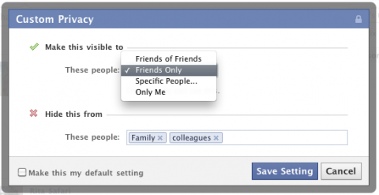
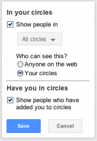
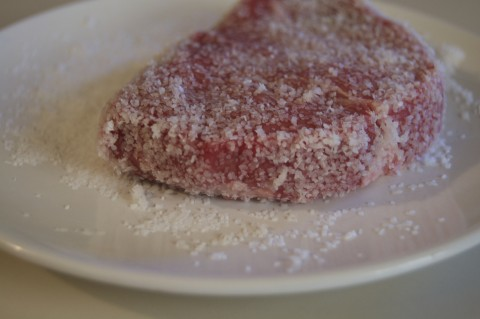
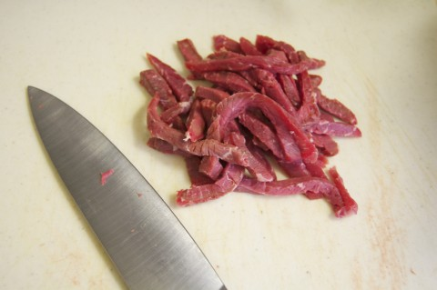

It’s a good piece of short writing but it doesn’t reach me. He writes:
These days I have a young family, and a startup — and, let’s face it, ubiquitous Internet access that makes printed paper seem obsolete — so I can’t recall the last time I indulged myself with the Sunday paper anymore.
But jeez, the Sunday paper is still great, still an amazing product of a long, long tradition of careful editorial packaging and art direction and just general purposefulness. If I could afford to spend a whole day with it again, I would, and for anyone who finds themselves with a Sunday to kill, I recommend picking up the Sunday edition of your local newspaper.
I’m right there with the feelings of obsolescence – I haven’t subscribed to a newspaper in about a decade or so. But great? Really?
I remember when I got my first place that was really my place. It was 1998. It wasn’t a dorm, it was a real apartment. I signed the lease. I paid rent with my own money. When the door-to-door News and Record salesman came by I signed up to get the paper every day. That’s what adults did. I was a big fancy grad student now, and I needed to be informed about the world.
For the first year or so I would be up in the morning, making breakfast and coffee. I’d here the clunk of the paper hitting my durable all-aluminum apartment door. I’d fetch the paper and read the front page, maybe the comics, and flip through a bit. And then it would hit the recycling pile.
On Wednesdays the ads came. The 3/4″ of news was bulked up to a good 1 1/2″ with slick glossy ads for second-hand meat at the Winn Dixie. On Sundays are when the real ads came. Oh, and of course Parade Magazine which is ads, two cartoons, and more ads, and an article for seniors.
On Fridays I might forget to take out the recycling, so on the next friday I would cram a 24″ high, 12lb stack of obsolete information and coupons for Captain Crunch in to a groaning, stretching plastic bag which would tear and split and barely make it out to the curb.
When the sweet old lady called me back some time later to try to get me to resubscribe, she tried to tell me about a new low-cost subscription plan. I had to interrupt and explain that the reason I wasn’t subscribing wasn’t cost, but quality. She was slightly offended.
I can count on one finger the times that sitting down and reading the paper was the sort of experience Khoi describes (pub, Dublin, and Guinness involved). So when I read this sort of thing I have to wonder if the nostalgia for newspapers isn’t just a period drama set in the author’s mind.
I’ve clicked on my last ‘mark this comment as spam’ button. My site doesn’t get many legit comments because my readership is small. Regular readers are close friends and colleagues, everyone else is following a search result or a link to a technical piece I’ve written. Neither group is inclined to leave a comment. The former group talks to me regularly through other means, the other group is just looking for a solution to a problem (which I hope I provide).
So almost all the comments I get are spam that slips through the spam filter. I’ve moderated all comments for a long time, which greatly cuts down on spam (some spam bots appear to recognize when their comments don’t appear automatically) but still once or twice a week I have to login to my site to mark some new comment on an old post as spam.
There is very little value in comments for me. Very rarely do people with real questions pop in and I’m not trying to increase my traffic to sell ads (this is the only reason comments exist on most sites by the way), Real people with real questions can find me here, on twitter, or by email. So comments are closed.
I have started playing with Google+ and I like it.
The styling is minimal. The only UI elements that are boldly colored are ones that require a mouse click. Everything else is either grey or subtly colored. This emphasizes user content over everything else, making it far more pleasant to read compared to facebook or twitter’s web site (I tend to read twitter using the Twitter client for Mac or iPad, or Tweetbot on the iPhone).
One thing that stands out though is that Google+ (from now on I’m typing that as G+ because I’m lazy and I want to start a trend of laziness) is that privacy control is baked right into the interface in a very user centered fashion. Facebook, in comparison, hides privacy settings, beyond facebook’s preferred defaults, behind a byzantine set of user operations.
Sharing content

Post visibility is visible when you post.
In G+ when you share something, the visibility of that thing you’re sharing is immediately visible to the user. That is, when I share something I can see who will see it as I type. This means a casual glance is all I need to verify that I’m not broadcasting something embarrassing, private, or uninteresting to the wrong people. This seems like a pretty obvious design choice. Compared to facebook’s implementation though it’s refreshing.
When you post an item to your newsfeed in facebook, visibility settings are hidden under a drop-down menu. You can’t see what the settings are unless you click it. If your settings are different from the default (i.e. “custom”) you have to select “Custom” to see what your settings actually are or to change them.
Adding people to a post
G+ shows you immediately who you’re broadcasting too, and makes changing the settings much faster. Firstly restricting the post is far easier, because all you must do is click the ‘x’ on the social circle you want to remove. Sharing with a broader audience (the more dangerous option) requires selecting “Add more people” and choosing social circles, extended circles, or public from a menu.

Post visibility is hidden
Once you’ve delved into the custom post settings on facebook, you have the option to make your new settings the default – so your choice will be invisible to you on your next post, because you will again have to click the privacy menu, and click “custom” to see our settings. In G+ there is no default, it simply uses the settings you applied in your previous post for the next post. Because these settings are immediately visible you can change them if needed, or not.

Customizing post security requires a second window
Privacy settings management
Facebook places privacy settings under the Account menu in the upper right corner of the page. If the privacy settings management tools were good this would be a good decision with all privacy issues handled in one place. Unfortunately the tools are (probably deliberately) obstuse.
Four bad choices
Editing privacy settings in facebook presents you with an incomplete tabular grid of settings that looks like a feature comparison chart for crappy enterprise software. You have the option of selecting “Everyone” (no privacy), “Friends of Friends” (effectively no privacy), “Friends” (some privacy), “Recommended” (let facebook do what it wants), or “Custom”.
Cryptic options
Selecting custom presents you with a long list of options with menus that must be selected individually (there’s no way to set several options at once). In some cases facebook links to yet another privacy tool to make settings for a different thing.
I believe that this is purposefully done to discourage privacy management.

Edit privacy settings inline on your profile
G+ also has a privacy settings management page. This page describes and links to privacy management tools throughout G+ and your Google account. In most cases privacy settings are integrated into the editing interface of anything you can edit. So if I am on the G+ privacy page and I select “Edit network visibility” I am directed to my profile page, which is switched into edit mode, and the section of my profile which indicates network visibility is activated. When I save these settings, I’m left on my profile to continue editing. When editing anything in my profile I can set the visibility of that particular bit of data as I am editing it. This works well with most things..I find managing privacy settings in G+ photos to be a little wonky as you are bounced over to Picassa to do so. Additionally your G+ profile page has a place for scrapbook photos which are visible to to the public. This cannot be changed.
Lists and circles
Facebook allows you to create lists of friends, G+ uses social circles. Facebook friends are all dumped into a big arbitrary friends list. You can create new lists from this main list by entering a list name and selecting a batch of friends. The interface for this is fidgety and obviously not intended for regular use.
Edit friend lists in a tiny modal window
G+ offers something similar in the form of social circles, represented by literal circles. You add a user to a circle by clicking and dragging them into the circle. You can remove a user by dragging their icon from the circle or by clicking the circle to “open” it and managing it from there. The circles interface is far more intuitive and invites customization and reorganization.
Facebook lists are nearly invisible until you make an effort to review your friends or dig into privacy settings. G+ circles are a top level feature, placed on equal footing with your news stream, photos, and your profile.
Patterns emerge
G+ is new and may completely change by the time it’s released to the general public. But now at least facebook and G+ have much in common.
Facebook and G+ seem to offer very similar privacy features. In both you can manage your list of contacts or friends into groups and control who sees what.
G+, places all of this interaction in the forefront and integrates it cleanly into each interaction. Facebook obfuscates these tools behind multiple menu options, hidden menus, and tiny modal windows.
The G+ approach makes facebook appear to be hostile to user’s privacy needs. I suspect that facebook is actually hostile to user’s privacy needs. Even if it isn’t the effect is the same.
I’ve been doing some client side development at the jobbity job. I had to re-discover the zen art of making shit work in Internet Explorer.
I pulled an old trick out of my hat that I thought would be worth sharing.
Internet Exploer 7, and 8 do not support the nth-child pseudo element selector, but they do support the adjacent sibling selector. This means you can fake a basic nth-child selector for IE with the following:
/* standard nth */
ul.menu li:nth-child(3)
{
/* styles for the 3rd LI */
}
/* IE nth */
ul.menu>li + li + li
{
/* styles for the 3rd LI */
}
/* alternate, more specific IE nth */
ul.menu>li:first-child + li + li
{
/* styles for the 3rd LI */
}
Complex or formulaic nth-child selectors, or selectors with keywords are not possible with this method – but it does mean you can style, say, all the known list items in a static menu without resorting to lots of IDs or class names.
And no, of course this doesn’t work in IE 6 If you’re targeting IE 6 in this day and age you need to rethink your web strategy.
I recently came across a short piece on how to safely prepare steak tartare by Michael Ruhlman (author of Ratio which is a great book).
Today I had a spontaneous day off drop in my lap. A Friday off is a good day for a decadent lunch, so I decided to try making steak tartare for the first time.
Surprisingly easy
There are basically three steps to making steak tartare (after you’ve brought home some beef from the store).
Prepare the beef by rinsing and salting
Grinding or cutting the beef into small bits
Season the beef
I rinse every cut of meat, poultry, or fish I bring home. I do this if the meat is fresh or the fish comes frozen in an individually sealed plastic pouch. You cannot know what has come into contact with the surface of any meat you buy, so wash it off thoroughly.
Michael Ruhlman’s article above instructs coating the beef in a heavy layer of salt and resting the salted beef in the fridge for about an hour.

Salted for safety and seasoning
This does two things:
Any bacteria surviving on the surface of the meat are thoroughly destroyed
The exterior of the beef is seasoned and partially cured
After an hour the salt had pulled a good amount of moisture from the meat. I rinsed and patted the meat dry with fresh paper towels. I could see the texture and color of the beef had changed. I cut the small sirloin steak into thin strips. I could see that about 1/8” of the exterior of the meat had been salt cured after only an hour.
I cut the wide flat strips into thin strips. Then I cut all the strips into tiny cubes.

Cut into strips
I flavored my tartare with some painstakingly browned and reduced onions I prepared earlier (think In-N-Out style onions), a few grinds of black pepper, and a splash of balsamic vinegar. The beef needed no additional seasoning. The salty bits from the exterior of the steak had now been diced up fine and distributed throughout, seasoning everything nicely. This worked because my steak was relatively thin, about an inch, so there was plenty of surface area to be salted. A thicker cut may require a little additional salt.
Adding onion pepper and vinegar
Once I had everything mixed I packed it all into a 1 cup measure and stashed it in the fridge to wait while I prepared a libation, toast, and a poached egg.
Ready to rest in fridge
Aside: Cocktail on the side
At the ready, captain
If there was ever a dish which called out for a martini, steak tatare is it. I favor ‘classic’ martinis with 1 part vermouth to 3 parts gin. It’s OK. They’re big parts. A vodka martini would be acceptable with this dish, mostly because the vodka would be a good palate cleanser. Vodka is built to be colorless, odorless, and tasteless (like people who drink vodka martinis). It’s basically diluted pure grain alcohol. Alcohol works with foods sort of like salt does with foods – it brings out flavors that aren’t directly accessible by your tongue and saliva. Vodka, being tasteless, makes other things taste more like themselves. Imagine cooking with wine without the wine flavor. This is why you have vodka sauces, why vodka cocktails are typically made with bold fruits like tomatoes and lemons, and why vodka is served with caviar. If you like vodka, skip the martini, and just sip a shot straight from the freezer with some rich food.
Serving
I turned the tartare out onto a plate, topped with a poached egg, and added a buttered and toasted english muffin. I piled some cornichons on the side.
This dish was really fantastic. I’m generally pretty happy with what I make in the kitchen, but this was simply remarkable. Delicious, rich, but somehow not heavy. Simple and good.


{kind=link}